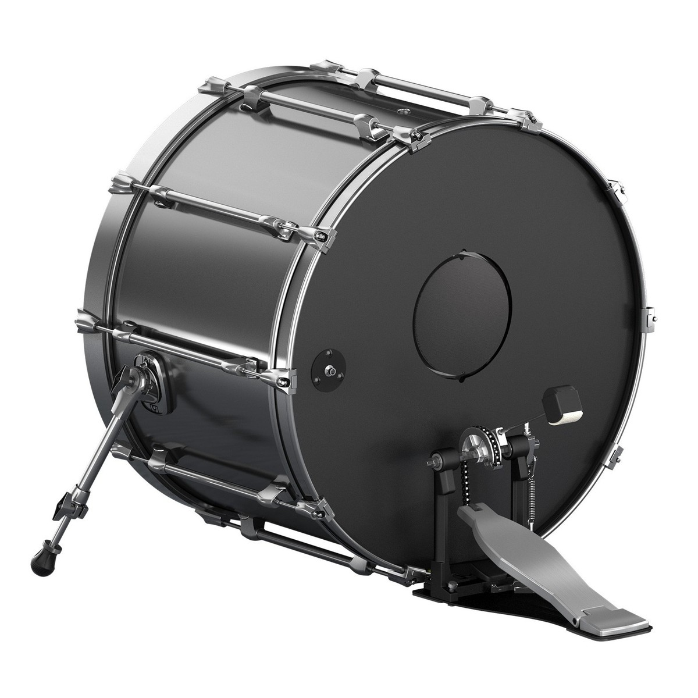
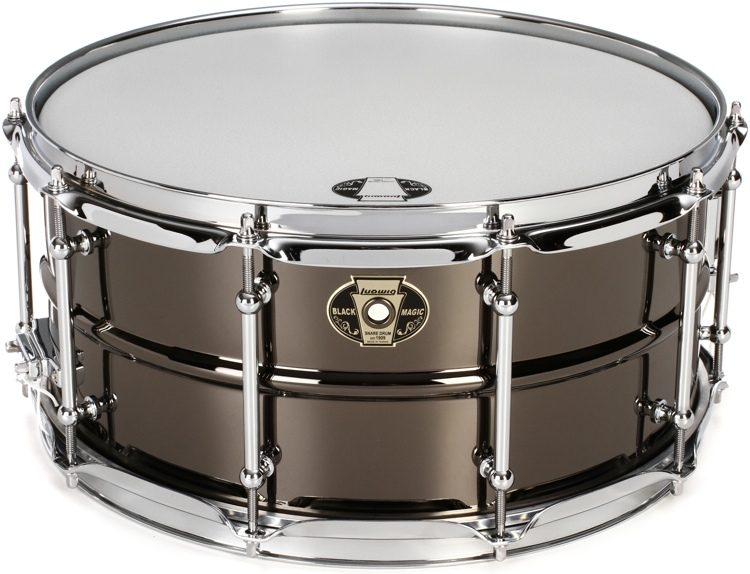
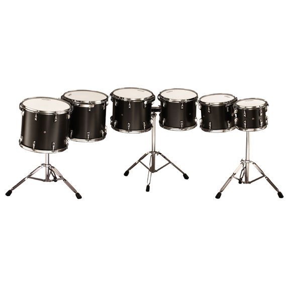
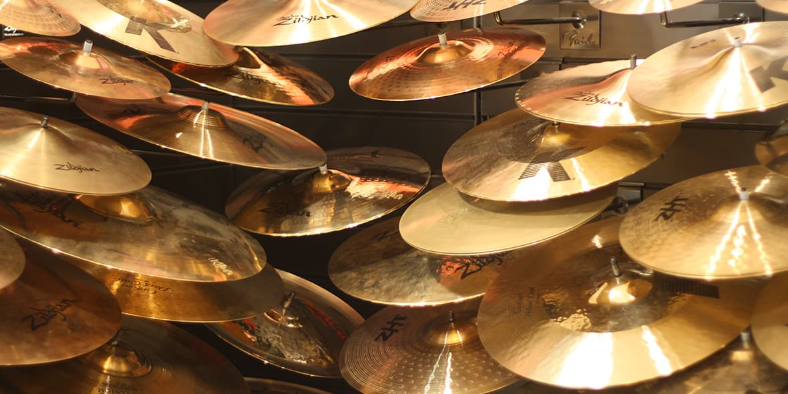
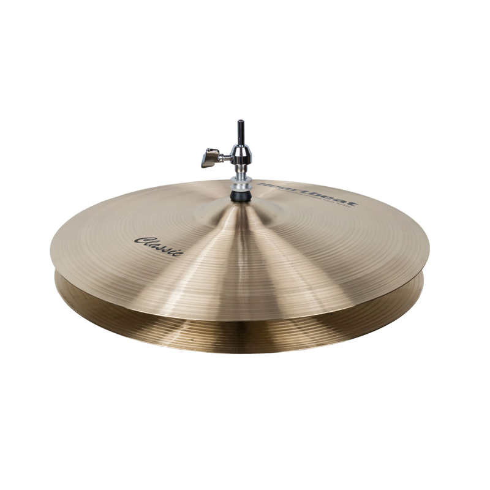

Utstyr
Eit trommesett er sat saman av mange ulike delar. desse delane kan miksas og matchas nesten som du vil, og det finnes nesen ingen limitasjonar. Til høgre står ei liste over dei grunnleggande delane i eit trommesett og kva dei gjer.
- Basstromme
- Skarptromme
- Tom-tomer
- Cymbaler
- Hi-hat
Basstromme (Kicktromme, Stortromme)

Basstromma spilles med høyre fot for høyrehendte, og spilles på slag 1 og 3 i store deler av dagens kommersielle musikk.
Basstromma finnes i diametre mellom 16" til 52", men det vanligste er 18"-24". Mange jazztrommeslagere foretrekker en basstromme på 18", fusiontrommeslagere finner gjerne 20" basstrommer for ideelle mens enkelte rocktrommeslagere trives godt med 24" eller 22" basstrommer. Trommeslager innenfor storbands jazz – svingjazz liker mye å bruke 26" eller 28". Basstromma opptrer i dybder mellom 14" til 22" der de grunne trommene responderer raskere enn de dype som trenger mer tid for trommeskinnene å vibrere. Innenfor marsj er størrelsene fra 20" til 30", mens innenfor klassisk musikk er størrelsen fra 32" i diameter til den største som er laget på 77". Den største serieproduserte basstrommen som lages idag er på 52" og det er DW som produserer den. Dybdene her varierer fra 10" til 30". For å oppnå bedre lyd fra basstromma lager man ofte et hull i resonansskinnet. Dette hullet kalles for et «porthole». Portholet frakter lufttrykket ut av trommen. For at portholet ikke skal sprekke i kanten fester man en holtz, som er en metallring som man fester i kanten. Disse er ca. 4 til 6 tommer i diameter.
Skarptromme

Skarptromma er sjelen i trommesettet, og har svært mye å si for lydbildet. I de fleste rytmer er skarptromma å finne på slag 2 og 4 i takten. Skarptromma opptrer i diametre i mellom 10" og 15" og er mellom 3" og 11" dype. Skarptromma har et kjempetynt underskinn, for å gi mest mulig respons til seidematten, som er en rekke med lange spiraler som ligger inntil skinnet. Det er disse spiralene som skaper den distinkte lyden som skarptromma gjengir, ved at spiralene spretter på underskinnet. Dette burde stemmes relativt høyt, uten at det mister klangen fullstendig, for å gi et tilstrekkelig underlag som seidenmatten kan sprette i. Mange trommeslagere (spesielt innen rock) velger å teipe en liten klut eller liknende på skinnet og/eller stemme ned tromma for å skape en mer komfortabel og mer produsert lyd. Dette hører man på de fleste tromme-innspillinger fra 80-tallet.
Innenfor marsj og klassisk musikk brukes også de samme størrelsene som til band musikk. Men her brukes det opp til 16" i diameter og dybder på 14" til 16". Disse kalles som regel for "tenor" / parade trommer og "field drums".
Tom-tomer

Tom-tom-trommene finnes i diametre mellom 6" og 18" og dybder mellom 5" til 18". Tammen brukes som krydder i en rytme eller i overganger. Tammene i et fem trommers trommesett opptrer oftest i størrelser med et like stort størrelsesprang mellom alle tammer (10", 12", 14"). I musikksammenheng kan disse også kalles tim, tam og tom eller tam-tam og gulvtam.
Cymbaler

En cymbal er laget av en metall legering, ofte en bronselegering, bestående av ca. 20% tinn og 80% kobber eller en messinglegering for billigere cymbaler. Mengden tinn i en legering kan endres (minskes) for å oppnå en annen lyd karakteristikk, men den kan ikke økes/overstige 20%. Legeringen vil da bli uegnet til å lage cymbaler av. Cymbaler finnes i de fleste størrelser, og brukes ofte til å markere skifter og/eller aksenter i musikken. De vanligste typene cymbaler er Hi-hat (se under), Crash og Ride. Crash cymbalene brukes som markeringer i melodier enten det er i begynnelsen, i deler av melodien og til slutt. Crash cymbalene deles inn i hovedsakelig 3 kategorier; crash, splash, china og effekt cymbaler. Splash cymbaler er stort sett i str 6" til 12", crash cymbaler fra 12" til 24", mens effekt cymbaler kan være alt i fra 6" til 20". Ridecymbalen har mye av den samme funksjonen som en hi-hat, men som regel i refrengene. Ridecymbaler opptrer oftest i størrelser mellom 18"-28", men det vanligste er 20" og 22"
Hi-hat

En hi-hat er to cymbaler som er lagt oppå hverandre, og er ofte 14" skjønt man finner både 10,12,13,15 og 16" hi-hatcymbaler. Hi-haten er trommesettets puls, og spilles vanligvis på hvert slag, alle åttendedelene eller alle sekstendedelene i en takt, litt avhengig av den rytmiske underdelingen til stykket så vil det være mange kombinasjoner av ovennevnte i en og samme takt
Om du vil diskutere trommer, snakke om musikarar, eller berre ha ein samtale med nokon so er det berre å legge ein melding ned i chat-en under.